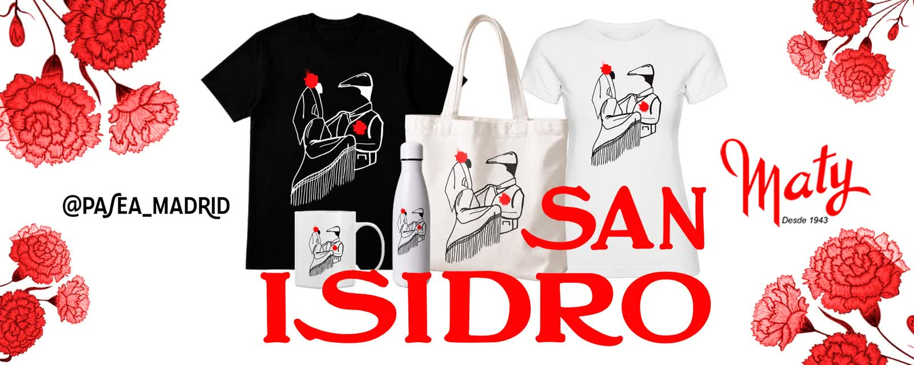

Más de 80 años vistiendo la danza y la fiesta en el centro de Madrid.

Maty fue fundada en 1943 como una tienda especializada en productos de danza y flamenco en el centro de Madrid. Lo que comenzó como un pequeño comercio dedicado al mundo del baile se ha convertido, más de 80 años después, en un referente nacional del sector.
En 1987, Maty amplió su catálogo incorporando disfraces de carnaval, Halloween y Navidad, consolidándose como la tienda más completa de Madrid para la danza, el espectáculo y la fiesta.
Hoy, Maty ocupa más de 1.200 m2 de superficie en la Calle Maestro Victoria 2, en pleno centro de Madrid, y cuenta además con una segunda tienda dedicada exclusivamente a la danza en la Calle Hileras 7.
En Maty buscamos ofrecer los mejores productos en calidad, diseño, originalidad y profesionalidad.
Disponemos de un taller dónde realizamos confecciones a medida tanto en textil como en calzado, con materiales de primera calidad.
Profesionales altamente cualificados y experimentados en constante mejora, dedicados a ofrecer la mejor atención al cliente.
Desde calzado de ballet hasta disfraces temáticos, pasando por maquillaje profesional. Todo en un mismo espacio.
Maty cuenta con dos establecimientos en el centro de Madrid:
Ambas tiendas se encuentran a pocos metros de la Puerta del Sol, con excelente acceso en transporte público (metro Sol, Callao y Opera).
Trabajamos con las marcas más reconocidas del sector de la danza y el espectáculo: